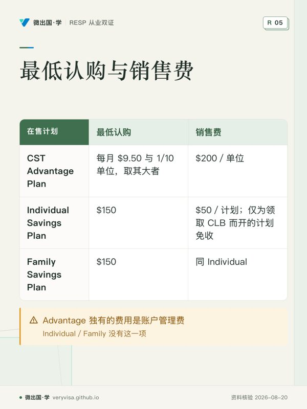
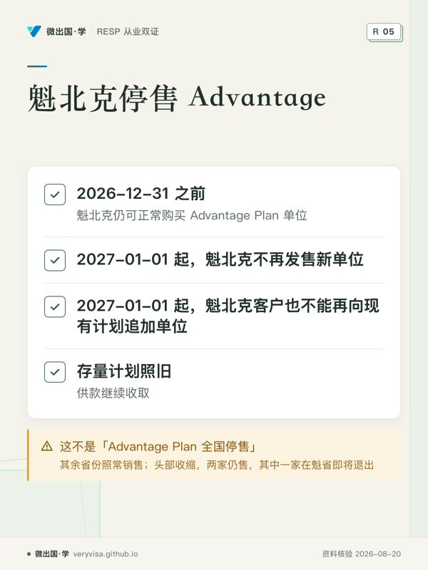

CST 产品知识考试考的是一家具体公司，而这家公司在你手上那本 2020 年手册出版之后，改了名、卖掉了一个计划、把另一个计划并进了姊妹公司、涨了费、换了总裁、还在一宗集体诉讼里没和解。
三类计划对比：RESP 全指南（2026 现行版）：政府配比 20%、终身 $7,200，怎么拿满怎么取出。论坛文章把个人计划、家庭计划与集团奖学金计划并排比较供款、补助与提款规则；各计划的具体条款以本页与现行招股书为准。
所以这一篇的组织方式与别篇不同：每一节都并列两栏——手册怎么说（考试口径）／2026 招股书怎么说（实务以此为准）。这不是学术洁癖。CST 自有培训材料在前言里写了这条规矩：该材料每两年更新一次，如有冲突，以现行 CST Plan Prospectus 为准。我们手上的手册是 2020-08 版，现行招股书是 2026-01-28 版——中间隔了三个应更未更的版本周期。
先给一张 2026 年的组织地图：
Canadian Scholarship Trust Foundation（基金会，1960 年成立，非营利）
├── 角色：Plan Sponsor / Promoter / 与认购人签约方 / 治理监督
│ 综合管理费与账户管理费收到这里
│
├─ 100% 持股 ─→ C.S.T. Savings Inc.（CSTS）
│ ├ Investment Fund Manager（2010 起）
│ ├ Principal Distributor / Scholarship Plan Dealer
│ └ 卖：CST Advantage / Individual Savings / Family Savings
│ 监管：各省证监会直管（不入 CIRO）
│
├─ 同挂基金会 ─→ C.S.T. Spark Inc.
│ ├ Scholarship Plan Dealer ＋ Mutual Fund Dealer 双注册
│ ├ CIRO Dealer Member、CIPF 会员
│ └ 卖：CST Spark RESP（投资 CST Spark Education Portfolios）
│
└─ 同挂基金会 ─→ C.S.T. Asset Management Inc.（CSTAM）
└ 六家组合经理之一（唯一的关联方组合经理）
Trustee & Custodian：RBC Investor Services Trust（1996-03-01 起，与 CSTS／基金会无关联）
Auditor：Deloitte LLP Transfer Agent & Registrar：基金会本身
一、原理与设计逻辑：为什么要拆成一个基金会加三家公司
本节回答This section answers 回答基金会与三子公司分工、监管归属、佣金来源与脱落机制Explain the division of responsibilities among the foundation and subsidiaries, regulatory jurisdictions, commission sources, and attrition mechanics. 本章考题 1Question 1 本章考题 2Question 2
非营利基金会 + 营利子公司：责任与激励的分离
基金会是非营利机构，由独立董事会治理，它才是与认购人签订 Education Savings Plan Agreement 的一方，也是各计划信托的设立人。它拿的是账户管理费与综合管理费（再从中支付组合经理、受托人与 CSTS 的服务费）。
CSTS 是营利公司，100% 由基金会持有，负责计划的日常管理、行政、记录、EAP 计算，同时是唯一分销商。它拿的是销售费中扣除退还准备后的分销费，以及基金会付给它的管理服务费。
这个结构解决了一件事：签约方与销售方分离。你签的合同对手是非营利基金会；卖东西给你、赚佣金的是营利公司。招股书里有一句非常重要的说明，值得作为回答「你们的佣金从哪来」的标准答案：
CSTS 作为分销商所得的报酬，直接来自认购人支付的销售费，不是从向计划收取的管理费中支付。这意味着 CSTS 支付给销售代表的报酬，不来源于计划的管理费。
ℹ️
这条对客户很有用：你交的管理费不会变成销售代表的佣金。佣金全部来自那笔 $200／单位的销售费，且其中一部分早已被划进销售费退还的隔离账户。
为什么要有第二家经销商（Spark）：因为它卖的是另一类证券
集团奖学金计划与共同基金受不同的规则管：
| C.S.T. Savings Inc. | C.S.T. Spark Inc. | |
|---|---|---|
| 注册类别 | Scholarship Plan Dealer | Scholarship Plan Dealer ＋ Mutual Fund Dealer（全部 13 个省／地区） |
| 自律组织 | 不入 CIRO，由各省证监会直管 | CIRO Dealer Member，且为 CIPF 会员 |
| 从业者资格 | Dealing Representative（须过 RESPDAC RDRE） | 走共同基金路线的称 "CST Spark Mutual Fund Representative" |
| 产品 | Advantage／Individual／Family（scholarship plan） | CST Spark RESP，投资 CST Spark Education Portfolios（共同基金） |
| 渠道 | 人工销售队伍，遍布各省 | ① App 自助线上开户 ② 人工顾问 |
🔧
这是全课讲「监管归属」最好的活例。 同一个基金会底下的两家姊妹公司，因为卖的产品类别不同，落入两套完全不同的监管体系：Spark 走 CIRO 管的共同基金路线，Savings 走省证监会直管的奖学金计划路线。CSA 的注册职能委托明确只覆盖投资交易商与共同基金交易商——SPD 公司与个人仍向所属省证监会注册并受其监管。任何说「奖学金计划经销商归 CIRO 管」的说法，截至 2026-08 都是错的。
集团计划的核心机制：单位、受益人组、attrition

这三个词是理解 Advantage Plan 的全部：
- Unit（单位）——认购人在其受益人组 EAP 账户中的份额。单位定价的设计目标是：同一受益人组内，每一个单位在到期时产生相同的收益，与供款频率无关。
- Beneficiary Group（受益人组）——预期在同一年开始接受高等教育的受益人集合（即 year of eligibility／cohort year）。
- Attrition（脱落）——有人中途走了，他被没收的收益不会退还给他，而是转入该受益人组的 EAP 账户，由留下来的受益人分享。
单位数由三个变量共同决定：供款金额、供款频率、入组时受益人的年龄。年龄越大，每单位所需的供款额越高——因为剩余的复利年数少，必须多投才能在同一年产生同样的收益。
手册例题（会算就够）：3 岁孩子、按月供 $125，3M 档单位价 $13.95 → $125 ÷ $13.95 = 8.961 单位；供款 168 个月（14 年 × 12）× $125 = $21,000。
两类 attrition 必须分清：
| 类型 | 触发 | 结果 |
|---|---|---|
| Pre-maturity attrition（到期前脱落） | 认购人取消计划，或转到其他提供商 | 被没收的收益进入该组 EAP 账户 |
| Post-maturity attrition（到期后脱落） | 受益人不读书／不入读合资格课程／未在受益期内入读 | 到期后受益人必须领满全部 EAP，否则收益作废 |
⚠️
Attrition 是 Advantage Plan 的卖点，也是它的伦理软肋。 你分到的钱，来自另一个家庭没能坚持下去。招股书自己披露了这个概率：最近五个到期的受益人组，平均 17% 的计划在到期前被取消。销售时可以讲 Group Plan Bonus，但不能只讲 Group Plan Bonus——按 RESPDAC 道德守则，只讲收益不公平披露风险与限制，本身就是误导性销售沟通。
二、2026 现行实务：逐项对照
本节回答This section answers 回答组织事实对照、三计划门槛、魁省停售、老计划与转换退费Explain organizational facts, thresholds across the three plans, Quebec sales cessation, discontinued plans, and transfer refund schedules. 本章考题 3Question 3
2.1 组织事实：哪些没变，哪些变了
| 事实 | 2020 手册 | 2026 招股书 | 裁决 |
|---|---|---|---|
| 基金会成立年 | 1960（1960-12-15 Letters Patent，非营利） | 1960 | 未变——两边都答 1960 |
| 创始六人 | Peter Wright、A. C. Lewis、Adrian C. Adamson、Kenneth L. Carter、C.C. Goldring、Gladys E. Neale | 同 | 未变 |
| 分销／管理子公司 | C.S.T. Consultants Inc.（CSTC），1988-09-01 设立 | C.S.T. Savings Inc.（CSTS），招股书称其 1988 年开始运营为计划的独家分销商 | 同一法人，已改名。改名的确切日期本课未核到，不要编 |
| Investment Fund Manager | CSTC，2010-09-28 起（依 NI 31-103 任命） | CSTS，招股书称 2010 年获任 IFM；《Plan Management and Administration Agreement》订于 2010-09-28（基金会／CSTS／受托人三方） | 未变 |
| 受托人兼保管人 | RBC Investor Services Trust | RBC Investor Services Trust，自 1996-03-01 起（由前身 The Royal Trust Company 依委任退任契据继任），且与 CSTS 及基金会无关联 | 未变，2020 考试口径这一条至今成立 |
| 存管银行 | 供款最初存入加拿大特许银行，当前为 Royal Bank of Canada (RBC) | 招股书按 Trustee／Custodian 口径表述 | Learnedly 题「depository bank = RBC」按考试口径答 |
| 审计师 | Deloitte LLP | Deloitte LLP | 未变 |
| 过户与登记 | — | 基金会本身任 Transfer Agent and Registrar | 招股书新增可考点 |
| 组合经理 | 手册未逐家列名 | 6 家：BlackRock Asset Management Canada、BMO Asset Management、CIBC Asset Management、C.S.T. Asset Management Inc.、Fiera Capital、TD Asset Management。除 CSTAM 外均与 CSTS／基金会无关联 | 招股书口径 |
| 常设委员会 | 3 个：Governance and Human Resources、Audit、Investment | — | 手册口径，考试按 3 个答 |
| 总裁／CEO | Sherry MacDonald（手册中以其名义设立三项奖学金） | Peter A. Lewis，自 2024 年 4 月起同任 CSTS 总裁兼 CEO 与 Ultimate Designated Person、基金会总裁、C.S.T. Spark Inc. 总裁、C.S.T. Asset Management Inc. 总裁 | 已变 |
| 首席投资官 | — | Ela Karahasanoglu，自 2025 年 6 月起同任 CSTS／Spark／CSTAM 的 CIO | 招股书新增 |
| 首席财务与运营官 | — | Christopher Ferris（也是 2026 招股书 Certificate 的签署人） | 招股书新增 |
✕
改名这件事，考场上不要「纠正」考试口径。 Learnedly 的 CST 题库与 2020 手册同源，题干与选项里出现的很可能仍是 C.S.T. Consultants Inc.／CSTC。考试按手册答；对客户、对同业、写任何对外文字，一律用 C.S.T. Savings Inc.／CSTS。 支票抬头也是同理——手册说初次存款支票抬头写给 C.S.T. Consultants Inc.，现实中必须按现行文件核对抬头，别照手册开支票。
2.2 三个在售计划与最低认购（2026 招股书封面口径）
| 计划 | 类型 | 最低认购 | 受益人资格 | 销售费 |
|---|---|---|---|---|
| CST Advantage Plan | 集团奖学金计划 | 每月 $9.50 与 1/10 单位，取其大者 | 入组时未满 13 岁、加拿大居民、每份协议仅一名受益人 | $200／单位（相当于单位成本的 3.1%–24.1%） |
| Individual Savings Plan | 自主型（self-determined） | $150 | 加拿大居民；每份协议一名受益人；不必与认购人有亲属关系 | $50／计划，自首笔供款扣清；仅为领取 CLB 而开的计划免收 |
| Family Savings Plan | 自主型 | $150 | 一名或多名受益人，须为认购人的子女、孙／外孙、曾孙，彼此以血缘或收养相关联；均须未满 21 岁；加拿大居民 | 同 Individual |
三个计划共用同一份招股书（Detailed Plan Disclosure），各自另有一份 Plan Summary。
自主型两计划的关键差异：Family Plan 可以在受益人之间调配收益与补助——一个孩子不读，钱可以给读的那个。这是选择 Family 而非 Individual 的主要理由。两者都可供款 31 年（或 Income Tax Act 规定的更晚日期）。
⚠️
Advantage 独有的费用是 Account Maintenance Fee。 Individual／Family 没有这一项。手册第 5 章复习题直接考这个：「CST Advantage Plan 有而 Individual／Family Plan 没有的费用是什么？」——答案是账户管理费。
2.3 魁北克 2027-01-01 停售 Advantage Plan（考试口径完全没有的新规）
2026 招股书封面与正文两处明写：
The Foundation and C.S.T. Savings Inc. will no longer offer units of the CST Advantage Plan for sale in Quebec effective January 1, 2027.
拆成实务语言就是四条：
- 2026-12-31 之前，魁北克仍可正常购买 Advantage Plan 单位；
- 2027-01-01 起，魁北克不再发售新单位；
- 2027-01-01 起，魁北克客户也不能再向现有计划追加单位（招股书在 "Adding Units" 段落单独重申了这一条）；
- 存量计划照旧：2027-01-01 之前购买的 Advantage Plan，供款继续收取，仍由 C.S.T. Savings Inc. 按原《Education Savings Plan Agreement》条款管理与行政。
✕
这不是「Advantage Plan 全国停售」。 招股书同时明确列出三个在售计划，Advantage 在其余省份照常销售，并给出完整的认购与费用表。行业大势确实是头部退出集团计划（Embark 的集团计划已于 2024-07-01 前全部清盘并入个人计划；Kaleido 自 2022-05 起只售 IDEO+ 个人 RESP），但 CST 与 CEFI 仍在卖。把「集团计划已死」当结论讲，是过度概括；准确说法是「头部收缩，两家仍售，其中一家在魁省即将退出」。
2.4 CST Bright Plan → CST Spark（考试口径时代的产品已经不存在了）
| 2020 手册时代 | 2026 现况 | |
|---|---|---|
| Bright Plan | 作为 CST 产品线的一员出现（IRC 费用由「全部 CST 计划与 CST Bright Plan」分摊） | 已于 2021-12 停止运作并并入 CST Spark。2021-12-09 特别持有人会议 89% 赞成，将 Bright Plan 的 RESP 账户与现金对价整体转入投资于 CST Spark Education Portfolios 的 CST Spark RESP 账户 |
| 现行 Spark 产品费用 | — | CST Spark Education Portfolios：年管理费 1.3%，另加标的基金费用最高 0.2%，另计适用税 |
| 网站陈旧内容 | — | cst.org 仍挂着一个描述「Bright Plan 管理费 1.5%」的 FAQ 页未下线——疑似 2021 年前旧文案，与并购公告不同步。这不代表 Bright Plan 仍在售 |
一条 2026 招股书里的旁证：IRC 费用的分摊对象现在写的是「全部计划（含停售计划）与 CST Spark Education Portfolios」——Bright Plan 这个名字已经从分摊名单里消失了。
2.5 已停售但仍有存量的计划（Discontinued Plans）
定义两条：CSTC 曾经提供但现已不提供的计划，且账上仍有活跃账户。
| 计划 | 在售期 | 与 Advantage 的关键差异 |
|---|---|---|
| Group Savings Plan (P4) | 至 2001 年停售 | 供款表更短；销售费全额退还（不是 50%），随第一笔 EAP 一次退清；月供计划需在首笔供款中先缴 $25／单位 |
| Founders' Plan (P3) | 1988-09 至 2000-08 | 没有销售费退还；EAP 资格、供款表与加买单位的规则都更严 |
⚠️
「Group Savings Plan」在手册里有两个意思，考试专门坑这个。 ① Group Savings Plan (P4) ＝ 2001 年停售的那个老计划； ② Group Savings Plan 2001 ＝ 2001-05-01 推出的第五个计划，2020-01-20 更名为 CST Advantage Plan——就是现在这个在售的集团计划。 看到「Group Savings Plan」四个字，先确认它带不带「2001」。
2.6 转换规则：Advantage → Individual／Family
这是 CST 考试与真实工作里都最高频的一组动作。
转出（Advantage → Individual／Family）
- 时限：随时可转，直至受益人年满 20 岁的那个日历年年末；该选项在受益人年满 21 岁那年的 1 月 1 日失效。
- 转什么：100% 的累积净供款、政府补助、以及这两者所产生的全部收益，全额转入。
- 手续费：无。
- 代价：转出后不再持有任何单位，作为 Advantage Plan 认购人的全部权利终止——包括不再有资格分享 attrition。你转而受 Individual／Family 计划协议条款约束。
- 可能拿回的钱：视在 Advantage Plan 中的年限，可获 0–25% 的销售费部分退还，随受益人的 EAP 按比例支付（见 §2.7）。
- 亲属限制：受益人若是家庭成员，可转入 Individual 或 Family；若不是家庭成员，只能转入 Individual。多数人选 Family，因为可以另加受益人。
为什么要转——招股书自己给了三条判据：
- 你希望自己控制供款的金额与时点（自主型计划没有固定供款表）；
- 你希望自己控制 EAP 的金额与时点；
- 你认为受益人可能根本不入读合资格课程（自主型计划允许把收益作为 AIP 取出），或可能只读三年或更短（自主型计划只要 13 周连续全日制学习就能把全部收益与补助取出）。
转回：在原 Maturity Date 之前可以转回 Advantage Plan，但必须补齐三样——转出前欠缴的全部供款、转出后本应缴纳的全部供款、以及这些供款本应赚到的收益。无手续费。
转到其他 RESP 提供商：$50／次转出费（从供款中扣），并放弃销售费。 从其他 CST 集团计划或其他 RESP 提供商转入：免收 $50 开户销售费，但供款起算日与到期日（第 36 年的 12 月 31 日）沿用两个 RESP 中较早的那个起始日。
🔧
「全额转、免手续费」这半句是真的，「不损失任何东西」是假的。 转出瞬间你失去的是 attrition 分享权——也就是 Advantage Plan 唯一的超额收益来源。所以这个动作的正确讲法是：用 attrition 分享权，换回对钱的控制权与灵活性。 谁该换，取决于你对孩子学业路径的判断，不取决于哪个听起来更好。
2.7 销售费退还两条路（与费用篇同源，此处只列 CST 专属数字）
| 路径 | 条件 | 比例 | 支付方式 |
|---|---|---|---|
| 走完 Advantage 全程 | 交齐全部应缴供款 + 计划到期 + 受益人领满四笔 EAP | 50% | 随四笔 EAP 分四次付，每笔 12.5%；退还笔数不得多于 EAP 笔数；不含销售费产生的收益；对认购人与受益人均免税 |
| 中途转入 Individual／Family | 按在 Advantage Plan 中的年限 | 0–3 年 0%／3–6 年 5%／6–9 年 10%／9–12 年 15%／12–15 年 20%／15 年以上 25% | 按从账户收益中提取的 EAP 金额按比例支付 |
历史条款：2007 年 10 月之前购买的计划，销售费退还比例是 100%。 失效条款：主动减少单位（reduce Units）时，被取消单位的销售费退还权利作废；被减单位已付的销售费只能在受益人未满 13 岁时按比例抵扣未来新增单位的销售费，不能抵扣现有剩余单位。
2.8 魁北克集体诉讼：一条必须知道、但不能乱说的事实
招股书 "Legal and Administrative Proceedings" 节的事实链：
- 2018-06-15，魁北克 Superior Court 依《新民事诉讼法典》受理一宗针对在魁运营的全部注册奖学金计划经销商（含 CSTS 与基金会）的诉讼；
- 争点是 2013-07-19 以来向魁北克客户收取的销售费（旧称 enrolment fees）金额；
- 2021-03-31 获准作为集体诉讼推进；
- 证据开示已完成，CSTS 的承诺事项已履行；
- CST 的立场原文：we cannot predict the final outcome or timing，且 We believe that we have strong defenses and intend to vigorously defend。
同案的其他被告已经和解：Children's Education Funds、Knowledge First、Heritage 三方于 2025-07-14 签署和解协议（拟赔付 $634,072，2025-08-29 排期法院聆讯）。CST 未和解，针对 CST 的诉讼仍在按实体审理。
✕
这条的正确讲法只有一种：陈述事实，不预测结果。 可以说：「有一宗关于魁省销售费的集体诉讼在审，CST 是被告之一，尚未结案，招股书里有完整披露。」 不能说：「已经和解了」（CST 没有）／「我们赢定了」（招股书自己说无法预测）／「跟我们无关」（CSTS 与基金会都被列名）。 另一条相关背景：CST Savings 于 2025-09-24 就 CSA 拟修订 NI 31-103（禁止 chargeback）向 OSC 提交了意见函，主张奖学金计划经销商应获豁免或差异化监管。这说明销售费与佣金结构正在被监管重新审视——这是未来两三年最可能变的一块。
三、现实案例
本节回答This section answers 回答魁省停售告知、19岁转户窗口、共同基金越界与13年退费Explain mandatory disclosure of Quebec sales cessation, the age 19 transfer window, avoiding mutual fund boundary violations, and 13-year transfer refund calculations. 本章考题 4Question 4
案例一：魁北克的客户，2026 年 11 月来问 Advantage Plan。 现在还能卖——2026-12-31 之前魁省仍在售。但你必须主动告诉他：2027-01-01 起魁省停售新单位，届时他也不能再向这份计划追加单位；已购部分继续按原协议管理。不讲这一条就成交，等于在明知重大限制的情况下未作披露。
案例二：孩子 19 岁了还没决定读不读书。 关键日期有两个：转入 Individual／Family 的窗口开到受益人 20 岁那年年末，21 岁那年 1 月 1 日彻底关闭；而计划本身的最终期限是第 36 年的 12 月 31 日。如果他很可能不读，或只读一两年，现在转入自主型计划是明显更优解——AIP 通道与「13 周即可取全部收益」这两条只有自主型计划有。别等到 21 岁，那时这扇门已经关了。
案例三：客户看到网上写 Bright Plan 管理费 1.5%，问能不能买。 Bright Plan 2021-12 已并入 CST Spark，不是在售产品。现行是 CST Spark RESP，投资 CST Spark Education Portfolios，管理费 1.3% + 标的基金最高 0.2%。那个 1.5% 的页面是官网未下线的旧文案。注意你自己的注册类别：Spark 产品由 C.S.T. Spark Inc.（共同基金交易商）销售，不是 CSTS 的 SPD 牌照能卖的东西——别越界推荐。
案例四：客户在 Advantage Plan 里满 13 年，想转 Family Plan。 落在 12–15 年档 → 可退 20% 的销售费，随受益人 EAP 按比例支付；净供款、补助与全部收益 100% 转入且无手续费；代价是失去 attrition 分享权。你要把这三句话一起说完，客户才算被告知。
四、历史变迁：1960 → 2026
本节回答This section answers 回答1960至2026年设立、监管纳入、递延纳税与更名时间线Explain the historical timeline spanning 1960 to 2026, including incorporation, regulatory oversight, tax deferral, and plan renaming milestones. 本章考题 5Question 5
| 时间 | 事件 |
|---|---|
| 1960-12-15 | 基金会依《Companies Act》以 Letters Patent 注册为非营利公司，创始董事六人 |
| 1961-03-31 | 第一份 Canadian Scholarship Trust Plan 协议签署；同年 8 月底已有 694 份协议 |
| 1965–1988 | 计划由 Canadian American Financial Corp. (Canada) Ltd. 依特许经营协议分销 |
| 1967 | 基金会时任总裁 Wright 致函各省检察长，指出十余家同业可能未保有足够准备金 → 奖学金信托计划被纳入各省证券监管 |
| 1971 | 开始发放 EAP（比任何其他集团 RESP 提供商都早） |
| 1972 | CST 成为全国范围内唯一提供奖学金协议的机构 |
| 1974 | Jack Quinn 从 Revenue Canada（今 CRA）争得 CST 计划收益递延纳税待遇，追溯至 1972 年——此后收益改在受益人领 EAP 时计入受益人所得 |
| 1979-12-01 | 第二个计划推出，合资格院校扩展至社区学院与技术学校 |
| 1988-09-01 | 设立全资营利子公司 C.S.T. Consultants Inc.；同年推出第三个计划 Founders' Plan（受益人入组年龄上限 10 → 13 岁） |
| 1992-03 | 第四个计划推出（初称 Optional Plan，后改称 Group Savings Plan）——首个提供销售费全额退还且 EAP 更灵活的计划 |
| 2001-05-01 | 第五个计划 Group Savings Plan 2001 推出（面向公众自 2001-04-27 起） |
| 1996-03-01 | RBC Investor Services Trust（由 The Royal Trust Company 继任）成为受托人，迄今未变 |
| 2010-09-28 | CSTC 获任 Investment Fund Manager（依 NI 31-103）；三方《Plan Management and Administration Agreement》同日订立 |
| 2018 | C.S.T. Spark Inc. 上线，数字优先产品线 |
| 2018-06-15 | 魁北克集体诉讼程序启动（2021-03-31 获准为集体诉讼） |
| 2020-01-20 | Group Savings Plan 2001 更名为 CST Advantage Plan，并引入供款跳期、违约自动转入、部分销售费退还等增强功能 |
| 2020-01-15 起 | 自该日之后从 Advantage 转出者，适用 0–25% 年限阶梯的部分销售费退还 |
| 2021-12-09 | Bright Plan 持有人 89% 投票通过并入 CST Spark |
| 2024-04 | Peter A. Lewis 出任基金会／CSTS／Spark／CSTAM 总裁 |
| 2025-06 | Ela Karahasanoglu 出任 CIO |
| 2025-07-14 | 同案其他三被告和解（$634,072），CST 未和解 |
| 2025-09-24 | CST Savings 就 NI 31-103 拟禁 chargeback 向 OSC 提交意见函 |
| 2026-01-28 | 现行招股书发布（三计划在售；魁省 Advantage 将于 2027-01-01 停售） |
| 2027-01-01 | 魁北克 Advantage Plan 停售新单位（未来事件） |
五、边学边测
1. CST 计划的受托人兼保管人是谁？ → RBC Investor Services Trust。手册与 2026 招股书一致，自 1996-03-01 起未变。（若题目问「存管银行」，手册口径答 Royal Bank of Canada。）
2. 1972 年发生了什么，深刻改变了加拿大奖学金信托行业？ → 手册答案：CST 成为全国唯一提供奖学金协议的机构。另需记住 1967 年 Wright 致函各省检察长导致行业被纳入省证券监管，以及 1974 年 Jack Quinn 争得递延纳税（追溯至 1972 年）——三件事年份相邻，最容易混。
3. CSTC（现 CSTS）成立于哪一年？今天扮演什么角色？ → 1988-09-01；今天是计划的分销商与投资基金经理，负责分销、管理与行政。
4. 什么是 Beneficiary Group？哪个计划有？ → 预期同一年开始高等教育的受益人集合（year of eligibility）；只有 CST Advantage Plan 有（Individual／Family 没有单位、没有受益人组、没有供款表）。
5. Advantage Plan 有而 Individual／Family Plan 没有的费用是哪一项？两者销售费有何不同？ → Account Maintenance Fee；Advantage $200／单位（先全额、后半额从供款扣），Individual／Family $50／计划（自首笔供款一次扣清）。
6.（计算） 2 岁孩子，选「monthly for 10 years」，每月 $300，单位价 $13.75 → 21.818 单位，总供款 $300 × 120 = $36,000，销售费 21.818 × $200 = $4,363.60；前一半 $2,181.80 ÷ $300 ≈ 7 个月，后一半 $2,181.80 ÷ $150 ≈ 15 个月，合计约 22 个月付清。
7. 销售费退还最多能拿回多少？ → 走完全程且领满四笔 EAP：50%（每笔 EAP 退 12.5%）。中途转入 Individual／Family：按年限最高 25%。两者不叠加。 2007-10 之前购买的老计划为 100%。
8. Advantage Plan 全国停售了吗？ → 没有。 仅魁北克自 2027-01-01 起停售新单位，其余省份照常在售，存量计划继续管理。
9. CST Bright Plan 现在还能买吗？ → 不能。 2021-12 并入 CST Spark；现行产品是 CST Spark RESP（Education Portfolios，管理费 1.3% + 标的基金最高 0.2%）。官网仍挂的 1.5% 旧页面是未下线的陈旧内容。
10. 从 Advantage 转入 Individual／Family，会失去什么？ → 失去单位与作为 Advantage 认购人的全部权利，包括分享 attrition 的资格；换来的是对供款与 EAP 的控制权、AIP 通道、以及 13 周即可取全部收益的灵活性。净供款、补助与收益 100% 全额转入，无手续费。
六、核心术语双语表
| 中文 | English | 说明 |
|---|---|---|
| 加拿大奖学金信托基金会 | Canadian Scholarship Trust Foundation | 1960 成立，非营利，Plan Sponsor／Promoter／签约方 |
| （原）C.S.T. 顾问公司 | C.S.T. Consultants Inc. (CSTC) | 2020 手册用名，考试口径 |
| C.S.T. 储蓄公司 | C.S.T. Savings Inc. (CSTS) | 2026 现行名，IFM + 主分销商 + SPD |
| C.S.T. 火花公司 | C.S.T. Spark Inc. | 姊妹公司；SPD + 共同基金交易商双注册；CIRO 会员 |
| C.S.T. 资产管理 | C.S.T. Asset Management Inc. (CSTAM) | 六家组合经理中唯一的关联方 |
| 投资基金经理 | Investment Fund Manager (IFM) | CSTS 自 2010 年起担任 |
| 受托人兼保管人 | Trustee and Custodian | RBC Investor Services Trust，1996-03-01 起 |
| 过户与登记机构 | Transfer Agent and Registrar | 由基金会本身担任 |
| 集团奖学金计划 | Group Scholarship Plan | CST Advantage Plan |
| 自主型计划 | Self-determined Plan | Individual / Family Savings Plan |
| 单位 | Unit | 受益人组 EAP 账户中的份额 |
| 受益人组／资格年度 | Beneficiary Group / Year of Eligibility | 预期同年入学的受益人集合 |
| 供款表 | Contribution Schedule | 9 种供款频率；按孩子入组年龄定每单位供款额 |
| 脱落（到期前／到期后） | Pre-/Post-maturity Attrition | 被没收的收益转入该组 EAP 账户 |
| 集团计划奖金 | Group Plan Bonus | 从 General Fund 支付以补充 EAP |
| 销售费退还／忠诚奖金 | Refund of Sales Charges / Loyalty Bonus | 50%（全程）／0–25%（中途转出） |
| 已停售但仍活跃的计划 | Discontinued Plans | Group Savings Plan (P4)、Founders' Plan (P3) |
| 累计收益提取 | Accumulated Income Payment (AIP) | 仅自主型计划可用 |
| 到期日 | Maturity Date | 计划终期为第 36 年的 12 月 31 日 |
七、来源清单
CST 产品考试口径层
- CST《Product and Resource Manual》2020-08，第 1 章 The CST Organization（1960 成立与创始六人、1967/1972/1974 三个历史节点、1988 CSTC 设立、2010-09-28 任 IFM、RBC Investor Services Trust 为受托保管人、RBC 为存管银行、Deloitte LLP 为审计师、三个常设委员会、Learning Matters 慈善、17 项 $10,000 研究生奖）
- 同上，第 5 章 CST Plans Structure（Advantage 更名沿革、受益人组、单位与供款表三变量、9 种供款频率、attrition 两型、$200／单位与 $50／计划、账户管理费、2019 年综合管理费、SCR 50% 与 0–25% 表、P4／P3 停售计划）
- 同上，第 4 章 Sales Practices（CDIC／CRA／政府背书禁令等，详见「从业行为红线」那一篇）
- 手册前言的版本裁决原句：This manual is updated every two years. For any dispute, the current CST Plan Prospectus will take precedence
现行层（实务以此为准）
- CST《Detailed Plan Disclosure / Prospectus》2026-01-28：封面三计划与最低认购、魁省停售声明；"Types of Plans We Offer"；"Who is Involved in Running the Plans"（CSTS 地址、基金会、RBC Investor Services Trust 无关联声明、六家组合经理、Deloitte、IRC）；"Manager of the Plans"（1988 起运营、2010 任 IFM、三方管理协议 2010-09-28、组织关系图）；董事与高管表（Lewis 2024-04、Karahasanoglu 2025-06、Ferris）；"Costs of Investing in this Plan"（费用三表）；"Refund of Sales Charges"；"Transferring to Individual Savings Plan or Family Savings Plan"；"Adding Units" 中的魁省追加限制；IRC 2025 财年报酬明细与受托费 $212,000；"Dealer compensation from management fees"；"Legal and Administrative Proceedings"
- CST《Plan Summary》2026-01-28（Advantage 最低投资、五类损失风险、近五组平均 17% 取消率）
- CST《RDI and COI Disclosure Document》2026（CSTS 注册为 Scholarship Plan Dealer；仅售自有产品的利益冲突；推荐费低于 $15／名与名义礼品；OBSI／AMF 投诉路径；补偿基金说明）
研究层
research/CST产品线现状核实_2026-08-20.md（§1 魁省停售、§2 Spark／Bright Plan 与 1.3%／1.5% 存疑、§4 组织现况、§5 费用表、§6 转换规则、§7 公司动作与诉讼）knowledge/units.jsonl（版本裁决）、（魁省停售）、（两条未变三条已变）、（Bright Plan 并入 Spark）、（SPD 不入 CIRO）、（行业格局）
本篇最可能出错的地方（请重点复核）：① CSTC → CSTS 的改名日期本课未核到，全文只说「同一法人、已改名」，没有给日期——若考试或客户追问，正确回答是「未核实」而不是猜一个年份；② Spark 产品 1.3%／Bright 旧页 1.5% 两个费率并存的原因未完全厘清，1.3% 来自搜索摘要而非逐字核对原页；③ 基金会成立年份 1960 在 2026 招股书中未逐字复核，本篇依据是 2020 手册（1960-12-15 Letters Patent）与官网 FAQ 摘要，两者互证但非招股书原文直读；④ 魁北克集体诉讼的赔付金额 $634,072 与 2025-08-29 聆讯排期来自律所公开页面（转述法院程序节点），不是法院一手文件；⑤ 手册第 5 章的单位价（$9.50／$13.95／$13.75）是 2020 年供款表的值，2026 年供款表的价格本课未逐格核对——计算题的方法可靠，价格须以现行供款表为准。
放到真实家庭里
产品条款在家庭那一侧，常见的问题是「转出去会损失什么」「孩子读的课程算不算」。
读完了：用考题把这一章过一遍
按这个顺序做，十五分钟：先看怎么考，再看陷阱，用思维导图默写一遍骨架，最后做 7 道带逐项解析的练习；错的题自动进间隔复习。
听、看、翻：CST 产品线 2026
本页知识卡
不看正文也能拿到这一节的核心内容：先看导读，再看图。点图放大，左右翻页。

- 先看先从第一行看门槛与收费，再顺着两列往下比。
- 易漏Family 可在受益人之间调配收益与补助，这是表外最关键的选择差异。
- 下一步去讲义核对受益人资格，再把家庭结构带给持牌专业人士。

- 先看先把日期当分界，再区分新买与追加两个动作。
- 易漏这条变化考试口径完全没有，实务判断应回到招股书。
- 下一步去知识卡把地区和时点写成判断条件，个案再找持牌专业人士。